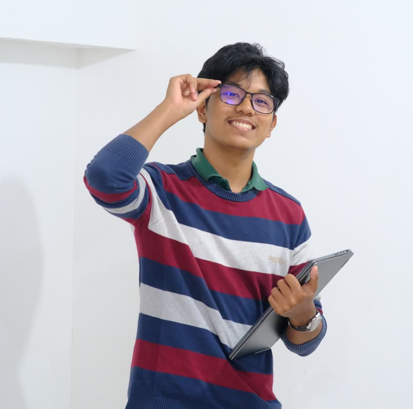

About
Abram John
R. Seneca
Computer Science student at Cavite State University.

Education
- 2026–2030 expectedCavite State University · Indang (Main)
- Bachelor of Science in Computer Science
- Senior high schoolCavite Science Integrated School–RSHS
Interests & skills
I’m interested in software development, robotics, databases, and cybersecurity. My goal is to become a software engineer and build a stronger foundation in data and technology.
I have basic knowledge of Java and Python, and hands-on experience with SQL and database management, Arduino programming, and robotics hardware.